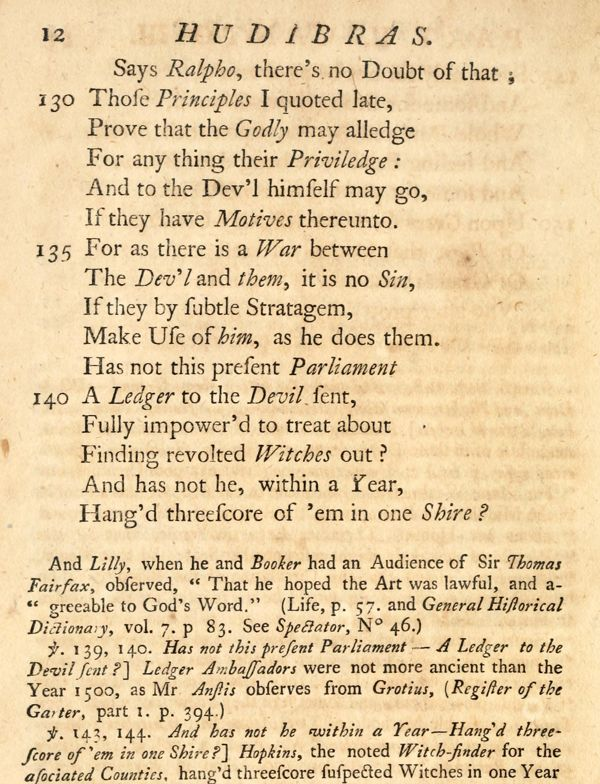

“A Ledger to the Devil” (Part II, Canto III, lines 129–154)
English: Grey’s edition, Dublin 1744, vol. II, pp. 12–13, scan. Ralpho is speaking. Highlighted: Lecky’s quotation.

Says Ralpho, there’s no Doubt of that;
Those Principles I quoted late,
Prove that the Godly may alledge
For any thing their Priviledge:
And to the Dev’l himself may go,
If they have Motives thereunto.
For as there is a War between
The Dev’l and them, it is no Sin,
If they by subtle Stratagem,
Make Use of him, as he does them.
Has not this present Parliament
A Ledger to the Devil sent,
Fully impower’d to treat about
Finding revolted Witches out?
And has not he, within a Year,
Hang’d threescore of ’em in one Shire?
Some only for not being drown’d,
And some for sitting above Ground,
Whole Days and Nights, upon their Breeches,
And feeling Pain, were hang’d for Witches.
And some for putting Knavish Tricks
Upon Green Geese, and Turkey-Chicks,
Or Pigs, that suddenly deceast
Of Griefs unnat’ral, as he guest;
Who after prov’d himself a Witch,
And made a Rod for his own Breech.
Grey’s notes (pp. 12–14):
Ver. 139, 140. Has not this present Parliament — A Ledger to the Devil sent?] Ledger Ambassadors were not more ancient than the Year 1500 …
Ver. 143, 144. And has not he within a Year — Hang’d threescore of ’em in one Shire?] Hopkins, the noted Witch-finder for the associated Counties, hang’d threescore suspected Witches in one Year in the County of Suffolk. See Dr. Hutchinson’s Historical Essay on Witchcraft, p. 37, 38.
[p. 14, OCR:] Ver. 153, 154. Who after prov’d himself a Witch, — And made a Rod for his own Breech.] “These two Verses (says Dr. Hutchinson, Historical Essay, p. 65.) relate to that which I have often heard, that Hopkins went on searching and swimming the poor Creatures till some Gentlemen out of Indignation at the Barbarity, took him and tied his own Thumbs and Toes, as he used to tie others; and when he was put into the Water, he himself swam as they did. This clear’d the Country of him …”
Lecky’s wording is from another edition (“Hath not”, “Hanged”). Hutchinson, it should be said, only reports the story of Hopkins’s swimming as something he had “often heard”.
Backlinks
Every place in Rationalism in Europe that links to this page (generated automatically when the site is built).
- Chapter I: note 112